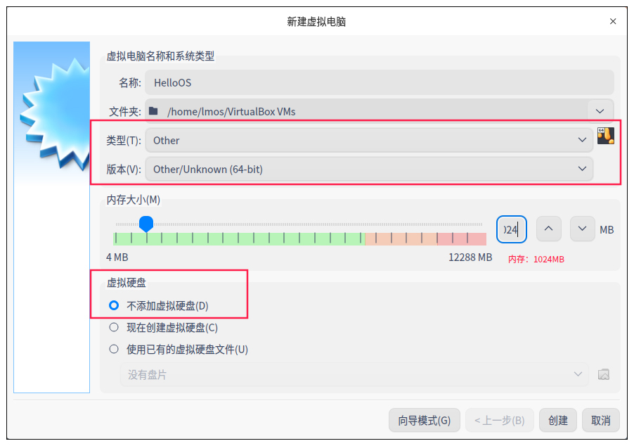
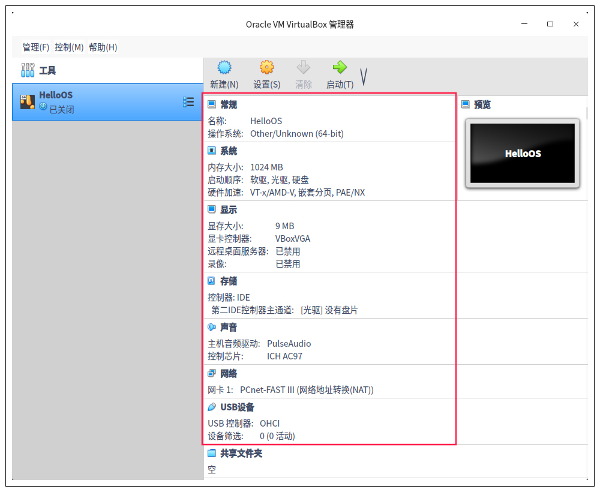

- 00 开篇词 为什么要学写一个操作系统？.md.html
- 00 编辑手记 升级认知，迭代自己的操作系统.md.html
- 01 程序的运行过程：从代码到机器运行.md.html
- 02 几行汇编几行C：实现一个最简单的内核.md.html
- 03 黑盒之中有什么：内核结构与设计.md.html
- 04 震撼的Linux全景图：业界成熟的内核架构长什么样？.md.html
- 05 CPU工作模式：执行程序的三种模式.md.html
- 06 虚幻与真实：程序中的地址如何转换？.md.html
- 07 Cache与内存：程序放在哪儿？.md.html
- 08 锁：并发操作中，解决数据同步的四种方法.md.html
- 09 瞧一瞧Linux：Linux的自旋锁和信号量如何实现？.md.html
- 10 设置工作模式与环境（上）：建立计算机.md.html
- 11 设置工作模式与环境（中）：建造二级引导器.md.html
- 12 设置工作模式与环境（下）：探查和收集信息.md.html
- 13 第一个C函数：如何实现板级初始化？.md.html
- 14 Linux初始化（上）：GRUB与vmlinuz的结构.md.html
- 15 Linux初始化（下）：从_start到第一个进程.md.html
- 16 划分土地（上）：如何划分与组织内存？.md.html
- 17 划分土地（中）：如何实现内存页面初始化？.md.html
- 18 划分土地（下）：如何实现内存页的分配与释放？.md.html
- 19 土地不能浪费：如何管理内存对象？.md.html
- 20 土地需求扩大与保障：如何表示虚拟内存？.md.html
- 21 土地需求扩大与保障：如何分配和释放虚拟内存？.md.html
- 22 瞧一瞧Linux：伙伴系统如何分配内存？.md.html
- 23 瞧一瞧Linux：SLAB如何分配内存？.md.html
- 24 活动的描述：到底什么是进程？.md.html
- 25 多个活动要安排（上）：多进程如何调度？.md.html
- 26 多个活动要安排（下）：如何实现进程的等待与唤醒机制？.md.html
- 27 瞧一瞧Linux：Linux如何实现进程与进程调度_.md.html
- 28 部门分类：如何表示设备类型与设备驱动？.md.html
- 29 部门建立：如何在内核中注册设备？.md.html
- 30 部门响应：设备如何处理内核I_O包？.md.html
- 31 瞧一瞧Linux：如何获取所有设备信息？.md.html
- 32 仓库结构：如何组织文件_.md.html
- 33 仓库划分：文件系统的格式化操作.md.html
- 34 仓库管理：如何实现文件的六大基本操作？.md.html
- 35 瞧一瞧Linux：虚拟文件系统如何管理文件？.md.html
- 36 从URL到网卡：如何全局观察网络数据流动？.md.html
- 37 从内核到应用：网络数据在内核中如何流转.md.html
- 38 从单排到团战：详解操作系统的宏观网络架构.md.html
- 39 瞧一瞧Linux：详解socket实现与网络编程接口.md.html
- 40 瞧一瞧Linux：详解socket的接口实现.md.html
- 41 服务接口：如何搭建沟通桥梁？.md.html
- 42 瞧一瞧Linux：如何实现系统API？.md.html
- 43 虚拟机内核：KVM是什么？.md.html
- 44 容器：如何理解容器的实现机制？.md.html
- 45 ARM新宠：苹果的M1芯片因何而快？.md.html
- 46 AArch64体系：ARM最新编程架构模型剖析.md.html
- LMOS来信：第二季课程带你“手撕”计算机基础.md.html
- 大咖助场 以无法为有法，以无限为有限.md.html
- 用户故事 yiyang：我的上机实验“爬坑指南”.md.html
- 用户故事 成为面向“知识库”的工程师.md.html
- 用户故事 技术人如何做选择，路才越走越宽？.md.html
- 用户故事 操作系统发烧友：看不懂？因为你没动手.md.html
- 用户故事 用好动态调试，助力课程学习.md.html
- 用户故事 艾同学：路虽远，行则将至.md.html
- 结束语 生活可以一地鸡毛，但操作系统却是心中的光.md.html
- 捐赠
10 设置工作模式与环境（上）：建立计算机
你好，我是LMOS。
经过前面那么多课程的准备，现在我们距离把我们自己操作系统跑起来，已经是一步之遥了。现在，你是不是很兴奋，很激动？有这些情绪说明你是喜欢这门课程的。
接下来的三节课，我们会一起完成一个壮举，从GRUB老大哥手中接过权柄，让计算机回归到我们的革命路线上来，为我们之后的开发自己的操作系统做好准备。
具体我是这样来安排的，今天这节课，我们先来搭好操作系统的测试环境。第二节课，我们一起实现一个初始化环境的组件——二级引导器，让它真正继承GRUB权力。第三节课，我们正式攻下初始化的第一个山头，对硬件抽象层进行初始化。
好，让我们正式开始今天的学习。首先我们来解决内核文件封装的问题，然后动手一步步建好虚拟机和生产虚拟硬盘。课程配套代码你可以在这里下载。
从内核映像格式说起
我们都知道，一个内核工程肯定有多个文件组成，为了不让GRUB老哥加载多个文件，因疲劳过度而产生问题，我们决定让GRUB只加载一个文件。
但是要把多个文件变成一个文件就需要封装，即把多个文件组装在一起形成一个文件。这个文件我们称为内核映像文件，其中包含二级引导器的模块，内核模块，图片和字库文件。为了这映像文件能被GRUB加载，并让它自身能够解析其中的内容，我们就要定义好具体的格式。如下图所示。

上图中的GRUB头有4KB大小，GRUB正是通过这一小段代码，来识别映像文件的。另外，根据映像文件头描述符和文件头描述符里的信息，这一小段代码还可以解析映像文件中的其它文件。
映像文件头描述符和文件描述符是两个C语言结构体，如下所示。
//映像文件头描述符
typedef struct s_mlosrddsc
{
u64_t mdc_mgic; //映像文件标识
u64_t mdc_sfsum;//未使用
u64_t mdc_sfsoff;//未使用
u64_t mdc_sfeoff;//未使用
u64_t mdc_sfrlsz;//未使用
u64_t mdc_ldrbk_s;//映像文件中二级引导器的开始偏移
u64_t mdc_ldrbk_e;//映像文件中二级引导器的结束偏移
u64_t mdc_ldrbk_rsz;//映像文件中二级引导器的实际大小
u64_t mdc_ldrbk_sum;//映像文件中二级引导器的校验和
u64_t mdc_fhdbk_s;//映像文件中文件头描述的开始偏移
u64_t mdc_fhdbk_e;//映像文件中文件头描述的结束偏移
u64_t mdc_fhdbk_rsz;//映像文件中文件头描述的实际大小
u64_t mdc_fhdbk_sum;//映像文件中文件头描述的校验和
u64_t mdc_filbk_s;//映像文件中文件数据的开始偏移
u64_t mdc_filbk_e;//映像文件中文件数据的结束偏移
u64_t mdc_filbk_rsz;//映像文件中文件数据的实际大小
u64_t mdc_filbk_sum;//映像文件中文件数据的校验和
u64_t mdc_ldrcodenr;//映像文件中二级引导器的文件头描述符的索引号
u64_t mdc_fhdnr;//映像文件中文件头描述符有多少个
u64_t mdc_filnr;//映像文件中文件头有多少个
u64_t mdc_endgic;//映像文件结束标识
u64_t mdc_rv;//映像文件版本
}mlosrddsc_t;
#define FHDSC_NMAX 192 //文件名长度
//文件头描述符
typedef struct s_fhdsc
{
u64_t fhd_type;//文件类型
u64_t fhd_subtype;//文件子类型
u64_t fhd_stuts;//文件状态
u64_t fhd_id;//文件id
u64_t fhd_intsfsoff;//文件在映像文件位置开始偏移
u64_t fhd_intsfend;//文件在映像文件的结束偏移
u64_t fhd_frealsz;//文件实际大小
u64_t fhd_fsum;//文件校验和
char fhd_name[FHDSC_NMAX];//文件名
}fhdsc_t;
有了映像文件格式，我们还要有个打包映像的工具，我给你提供了一个Linux命令行下的工具（在Gitee代码仓库中，通过这个链接获取），你只要明白使用方法就可以，如下所示。
lmoskrlimg -m k -lhf GRUB头文件 -o 映像文件 -f 输入的文件列表
-m 表示模式 只能是k内核模式
-lhf 表示后面跟上GRUB头文件
-o 表示输出的映像文件名
-f 表示输入文件列表
例如：lmoskrlimg -m k -lhf grubhead.bin -o kernel.img -f file1.bin file2.bin file3.bin file4.bin
准备虚拟机
打包好了映像文件，我们还有很重要的一步配置——准备虚拟机。这里你不妨先想一想，开发应用跟开发操作系统有什么不同呢？
在你开发应用程序时，可以在IDE中随时编译运行应用程序，然后观察结果状态是否正确，中间可能还要百度一下查找相关资料，不要笑，这是大多数人的开发日常。但是你开发操作系统时，不可能写5行代码之后就安装在计算机上，重启计算机去观察运行结果，这非常繁琐，也很浪费时间。
好在我们有虚拟机这个好帮手。虚拟机用软件的方式实现了真实计算机的全部功能特性，它在我们所使用的Linux下，其实就是个应用程序。
使用虚拟机软件我们就可以在现有的Linux系统之上开发、编译、运行我们的操作系统了，省时且方便。节约的时间我们可以喝茶、听听音乐、享受美好生活。
安装虚拟机
这里我们一致约定使用甲骨文公司的VirtualBox虚拟机。经过测试，我发现VirtualBox虚拟机有很多优点，它的功能相对完善、性能强、BUG少，而且比较稳定。
在现代Linux系统上安装VirtualBox虚拟机是非常简单的，你只要在Linux发行版中找到其应用商店，在其中搜索VirtualBox就行了。我们作为专业人士一条命令可以解决的事情，为什么要用鼠标点来点去呢，多浪费时间。
所以，你只要在终端中输入如下命令就行了，我假定你安装了Ubuntu系的Linux发行版，这里Ubuntu的版本不做规定。
sudo apt-get install virtualbox-6.1
运行Virtualbox后，如果出现如下界面，就说明安装VirtualBox成功了。-

建立虚拟电脑
前面我们只是安好了虚拟机管理软件，我们还要新建虚拟机才可以。点击上图中的新建，然后选择专家模式，就可以进入专家模式配置我们的电脑了。
尽管它是虚拟的，我们还是可以选择CPU类型、内存大小、硬盘大小、网络等配置，为了一致性，请你按照如下截图来配置。


可以看到，我们选择了64位的架构，1024MB内存，但是不要添加硬盘，后面自有妙用。显卡是VBoxVGA，还有硬件加速，这会让虚拟机调用我们机器上真实的CPU来运行我们的操作系统。
手工生产硬盘
上面的虚拟机中还没有硬盘，没有硬盘虚拟机就没地方加载数据，我们当然不是要买一块硬盘挂上去，而是要去手工生产一块硬盘。你马上就会发现，从零开始生产一块虚拟硬盘，这比从零开始写一个操作系统简单得多。
至于为什么手工生产硬盘，我先卖个关子，你看完这部分内容就能找到答案。
其实大多数虚拟机都是用文件来模拟硬盘的，即主机系统（HOST OS 即你使用的物理机系统 ）下特定格式的文件，虚拟机中操作系统的数据只是写入了这个文件中。
生产虚拟硬盘
其实虚拟机只是用特定格式的文件来模拟硬盘，所以生产虚拟硬盘就变成了生成对应格式的文件，这就容易多了。我们要建立100MB的硬盘，这意味着要生成100MB的大文件。
下面我们用Linux下的dd命令（用指定大小的块拷贝一个文件，并在拷贝的同时进行指定的转换）生成100MB的纯二进制的文件（就是1～100M字节的文件里面填充为0 ），如下所示。
dd bs=512 if=/dev/zero of=hd.img count=204800
;bs:表示块大小，这里是512字节
;if：表示输入文件，/dev/zero就是Linux下专门返回0数据的设备文件，读取它就返回0
;of：表示输出文件，即我们的硬盘文件。
;count：表示输出多少块
执行以上命令就可以生成100MB的文件。文件数据为全0。由于我们不用转换数据，就是需要全0的文件，所以dd命令只需要这几个参数就行。
格式化虚拟硬盘
虚拟硬盘也需要格式化才能使用，所谓格式化就是在硬盘上建立文件系统。只有建立了文件系统，现有的成熟操作系统才能在其中存放数据。
可是，问题来了。虚拟硬盘毕竟是个文件，如何让Linux在一个文件上建立文件系统呢？这个问题我们要分成三步来解决。
第一步，把虚拟硬盘文件变成Linux下的回环设备，让Linux以为这是个设备。其实在Linux下文件可以是设备，设备可以是文件。下面我们用losetup命令，将hd.img变成Linux的回环设备，代码如下。
sudo losetup /dev/loop0 hd.img
第二步，将losetup命令用于设置回环设备。回环设备可以把文件虚拟成Linux块设备，用来模拟整个文件系统，让用户可以将其看作硬盘、光驱或软驱等设备，并且可用mount命令挂载当作目录来使用。
我们可以用Linux下的mkfs.ext4命令格式化这个/dev/loop0回环块设备，在里面建立EXT4文件系统。
sudo mkfs.ext4 -q /dev/loop0
第三步，我们用Linux下的mount命令，将hd.img文件当作块设备，把它挂载到事先建立的hdisk目录下，并在其中建立一个boot，这也是后面安装GRUB需要的。如果能建立成功，就说明前面的工作都正确完成了。
说到这里，也许你已经想到了我们要手工生成硬盘的原因。这是因为mount命令只能识别在纯二进制文件上建立的文件系统，如果使用虚拟机自己生成的硬盘文件，mount就无法识别我们的文件系统了。
sudo mount -o loop ./hd.img ./hdisk/ ;挂载硬盘文件
sudo mkdir ./hdisk/boot/ ;建立boot目录
进行到这里，我们会发现hdisk目录下多了一个boot目录，这说明我们挂载成功了。
安装GRUB
正常安装系统的情况下，Linux会把GRUB安装在我们的物理硬盘上，可是我们现在要把GRUB安装在我们的虚拟硬盘上，而且我们的操作系统还没有安装程序。所以，我们得利用一下手上Linux（HOST OS），通过GRUB的安装程序，把GRUB安装到指定的设备上（虚拟硬盘）。
想要安装GRUB也不难，具体分为两步，如下所示。
第一步挂载虚拟硬盘文件为loop0回环设备
sudo losetup /dev/loop0 hd.img
sudo mount -o loop ./hd.img ./hdisk/ ;挂载硬盘文件
第二步安装GRUB
sudo grub-install --boot-directory=./hdisk/boot/ --force --allow-floppy /dev/loop0
；--boot-directory 指向先前我们在虚拟硬盘中建立的boot目录。
；--force --allow-floppy ：指向我们的虚拟硬盘设备文件/dev/loop0
可以看到，现在/hdisk/boot/目录下多了一个grub目录，表示我们的GRUB安装成功。请注意，这里还要在/hdisk/boot/grub/目录下建立一个grub.cfg文本文件，GRUB正是通过这个文件内容，查找到我们的操作系统映像文件的。
我们需要在这个文件里写入如下内容。
menuentry 'HelloOS' {
insmod part_msdos
insmod ext2
set root='hd0,msdos1' #我们的硬盘只有一个分区所以是'hd0,msdos1'
multiboot2 /boot/HelloOS.eki #加载boot目录下的HelloOS.eki文件
boot #引导启动
}
set timeout_style=menu
if [ "${timeout}" = 0 ]; then
set timeout=10 #等待10秒钟自动启动
fi
转换虚拟硬盘格式
你可能会好奇，我们前面好不容易生产了mount命令能识别的虚拟硬盘，这里为什么又要转换虚拟硬盘的格式呢？
这是因为这个纯二进制格式只能被我们使用的Linux系统识别，但不能被虚拟机本身识别，但是我们最终目的却是让这个虚拟机加载这个虚拟硬盘，从而启动其中的由我们开发的操作系统。
好在虚拟机提供了专用的转换格式的工具，我们只要输入一行命令即可。
VBoxManage convertfromraw ./hd.img --format VDI ./hd.vdi
;convertfromraw 指向原始格式文件
；--format VDI 表示转换成虚拟需要的VDI格式
安装虚拟硬盘
好了，到这里我们已经生成了VDI格式的虚拟硬盘，这正是我们虚拟机所需要的。然而虚拟硬盘必须要安装虚拟机才可以运行，也就是这个hd.vdi文件要和虚拟机软件联系起来。
因为我们之前在建立虚拟机时并没有配置硬盘相关的信息，所以这里需要我们进行手工配置。
配置虚拟硬盘分两步：第一步，配置硬盘控制器，我们使用SATA的硬盘，其控制器是intelAHCI；第二步，挂载虚拟硬盘文件。
具体操作如下所示。
#第一步 SATA的硬盘其控制器是intelAHCI
VBoxManage storagectl HelloOS --name "SATA" --add sata --controller IntelAhci --portcount 1
#第二步
VBoxManage closemedium disk ./hd.vdi #删除虚拟硬盘UUID并重新分配
#将虚拟硬盘挂到虚拟机的硬盘控制器
VBoxManage storageattach HelloOS --storagectl "SATA" --port 1 --device 0 --type hdd --medium ./hd.vdi
因为VirtualBox虚拟机用UUID管理硬盘，所以每次挂载硬盘时，都需要删除虚拟硬盘的UUID并重新分配。
最成功的失败
现在硬盘也安装好了，下面终于可以启动我们的虚拟电脑了，我们依然通过命令启动，在Linux终端中输入如下命令就可以了。
VBoxManage startvm HelloOS #启动虚拟机
输入以上命令就会出现以下界面，出现GRUB引导菜单。

直接按下回车键，就能选择我们的HelloOS，GRUB就会加载我们的HelloOS，但是会出现如下错误。
上面的错误显示，GRUB没有找到HelloOS.eki文件，这是因为我们从来没有向虚拟硬盘中放入HelloOS.eki文件，所以才会失败。
但这是我们最成功的失败，因为我们配置好了虚拟机，手动建造了硬盘，并在其上安装了GRUB，到这里我们运行测试环境已经准备好了。
其实你不必太过担心，等我们完成了二级引导器的时候，这个问题会迎刃而解。
重点回顾
希望今天这节课给你带来成就感，虽然我们才走出了万里长征的第一步。为了这一步我们准备了很多。但是我们始终没忘记这一课程的目的，即我们要从GRUB老大哥手里接过权柄，控制计算机王国，为此，我们完成了后面这三个工作。
- 我们了解了内核映像格式，以便我们对编译产生的内核程序文件进行封装打包。
- 为了方便测试我们的操作系统，我们了解并安装了虚拟机。
- 手动建立了虚拟硬盘，对其格式化，在其中手动安装了GRUB引导器，并且启动了虚拟电脑。
虽然我们启动虚拟电脑失败了，但是对我们而言却是巨大的成功，因为它标志着我们测试运行内核的环境已经成功建立，下一课我们将继续实现二级引导器。
思考题
请问，我们为什么要把虚拟硬盘格式化成ext4文件系统格式呢？
欢迎你在留言区跟我交流探讨，如果你身边有对写操作系统感兴趣的朋友，也欢迎把这节课分享给他，一起学习。
好，我是LMOS，我们下节课见！
© 2019 - 2023 Liangliang Lee. Powered by gin and hexo-theme-book.